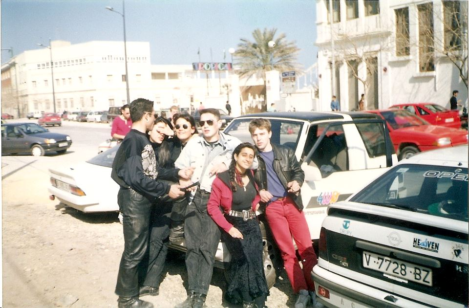
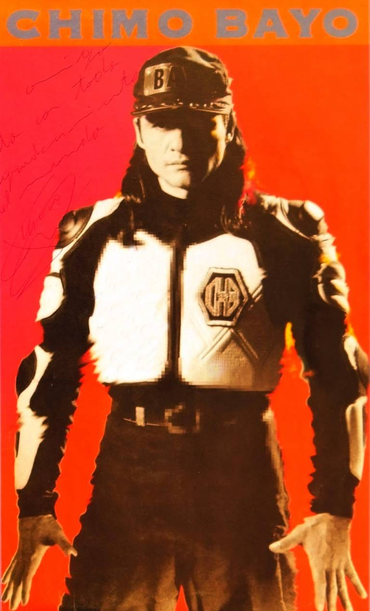

El blog de Kinkilleromedieval
El territorio valenciano se halla conectado por mar mediante el Mediterráneo y por tierra con la AP-7 que conecta con los Pirineos (pasando por Barcelona). En cuanto a contexto político iría a finales de la transición hasta mediados de los 90. Aquí han pasado muchas cosas y es que España estaba saliendo de una dictadura, el gobierno democrático estaba incipiente, se mantiene en la OTAN, entra en la Unión Europea, celebraciones deportivas (mundial de Naranjito o los JJOO de Barcelona) y las políticas del PP (conservador en lo social y liberal en lo económico).
Por otro lado, tenemos el contexto de las drogas, donde se van a potenciar aquellas que sean estimulantes como la coca, speed (sustituye a la mesca valenciana, si eso hare un post de su breve existencia) o MDMA (éxtasis) principalmente, ya que España en los 90 (la gran eclosión de la ruta) vivía un periodo de bonanza económica y por lo tanto la gente quería meterse para “hacer trampas” y aguantar toda la noche bailando.
Una buena pregunta, sería: ¿de dónde viene la droga? La respuesta es algo que la gente omite y es que España es un paraíso del narcotráfico por su posición geográfica y por las relaciones con Iberoamérica. Esto hace que desde España se distribuya por Europa casi toda la droga (no solo drogas eh, también de personas, animales…).
Aquí abriré un melón, bien sabrosón, pero lleno de polémica y es que buena parte de esta entrada de las drogas se debe a dos principales grupos: Charlines y clanes gallegos que contribuyeron al comercio de la cocaína en España porque uno de sus miembros hizo contactos colombianos en la cárcel y por otro lado, tenemos a ETA, que como todo grupo terrorista se financia mediante el crimen organizado y estos tuvieron contactos con las mafias italianas (los italianos les daban armas a cambio de cocaína) y con los cárteles colombianos, ya que un miembro de la organización terrorista tuvo un contacto colombiano, al cual le enseño la técnica de los coches bomba. Aunque también habría otros sujetos como los Grupos Antiterroristas de Liberación (GAL) que presuntamente se financiaron con el narcotráfico. Y como en España de esto no se sabe nada, me gustaría mencionar la misteriosa desaparición del informe navajas, donde se decía que en una comisaría del País Vasco estaban traficando con cocaína (y acusaban a puestos altos de la Guardia Civil), sin embargo, solo se leyó el contrainforme de la Guardia Civil, en el que se anunciaba a 4 cabezas de turcos. También habría que añadir que Barcelona, actualmente, es una de las ciudades europeas que más consume cocaína.
Por último, tendríamos las mafias italianas: ‘Ndrangheta, Cosa Nostra y Camorra, que en territorio español tienen un pacto de no agresión para que no los descubran. Estos grupos fueron y son muy importantes para el desarrollo de la costa levantina, pues erigieron edificios para emprender negocios (de cualquier tipo) y así blanquear el dinero, es por ello por lo que la llaman la “Costa Nostra”. Por otro lado, estarían las que proceden de Europa del Este que emigrarán a países del Mediterráneo por conflictos como desintegración de la URSS o de Yugoslavia.
La Ruta Destroy o del Bakalao (su nombre comercial) es un movimiento musical y social que surge en esa España de los 80-90 que he comentado antes. También habría que decir que, en los años 80, toda España estaba experimentado su propia “Movida” y Valencia no se quedó corta. Se llamaba "Ruta del Bakalao" por una leyenda que decía que alguien empezó a decir "bakalao" como sinónimo de temazo y de ahí, se popularizó. Su eclosión llegará en los años 90-93, por diversos factores:

1. COMPUTADORAS que susutiuyen al músico tradicional que iba con la guitarra y grababa el sonido en el estudio.
2. PRIMERA GUERRA DEL GOLFO: España participa (miembro de la OTAN) junto a EE. UU y los medios de comunicación dejaron de promover el rap (muy muy incipiente en España) porque un rapero americano cantó en contra de ese suceso y los medios españoles empezaron a poner el foco en la Ruta.
3. CHIMO BAYO (máximo referente dj).
4. EXPOSICIÓN DE SEVILLA Y JJOO DE BARCELONA que sirvieron como reclamo de turistas.
Este movimiento se caracterizaba por varios elementos. El primero, porque revolucionó el ocio nocturno. Es decir, antes había “garitos” y con la Ruta surgen las primeras discotecas tal y como las conocemos. Con ello aparecerán los “BAKALA” que eran esas personas que se iban el jueves de fiesta y volvían el domingo o lunes por la mañana. Además, mostró como esa España en aquellos momentos carecía de una regulación del ocio nocturno. Pues una ley decía que los locales debían de cerrar un mínimo de 2h, pero no se aclaraba a partir de que hora, por lo que muchos locales aprovechaban esos vacíos legales para abrir de 6AM-4AM. Por último, habría que mencionar la popularización de las raves, parkineo o botellón.
La mediatización de ese movimiento ("Hasta que el cuerpo aguante" del Canal+) y la catástrofe del caso Alcasser (3 menores fueron secuestradas, violadas y asesinadas), el aumento de accidentes de tráficos, etc. No obstante, su legado siguió presente hasta la Pandemia con: las discotecas, botellones, raves y los mil tipos de música tecno.